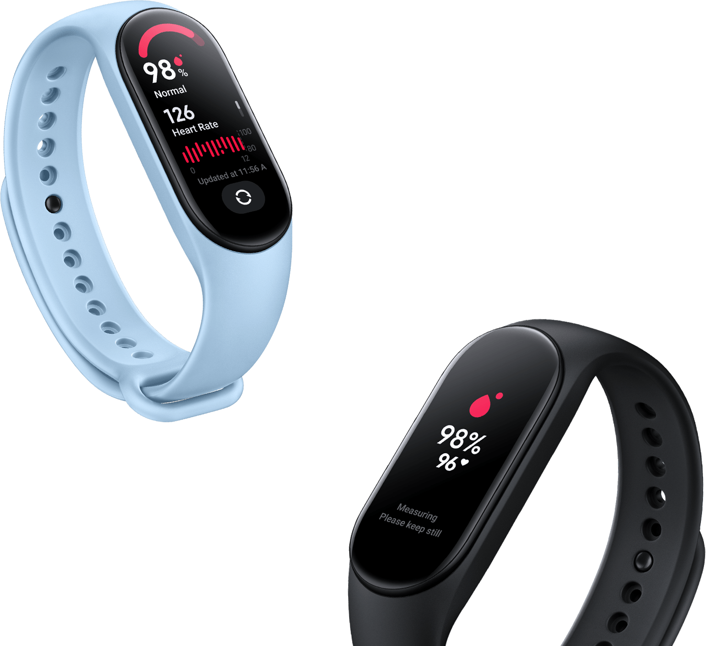
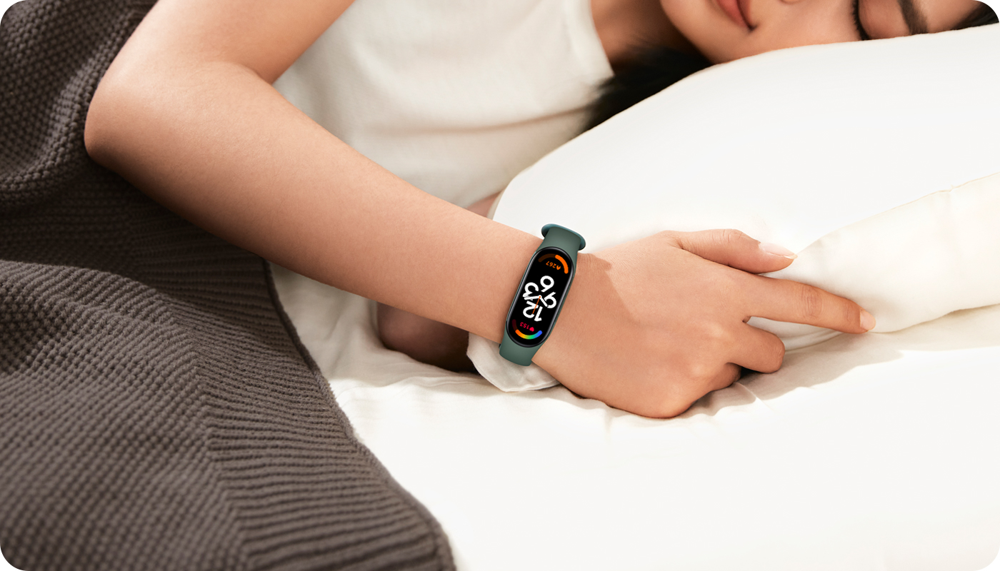

Smart Band 7
Um passo maior
1,62''
100+
Tela AMOLED sempre ativa de alta resolução com 1,62"
mostradores personalizados
Monitoramento de SpO₂ durante todo o dia
Monitoramento
do sono
Relatório detalhado do seu exercício
Monitoramento da frequência cardíaca
Pulseiras coloridas
Mais de 110 modos de esporte
Resistência
à água de
5ATM*
Até duas
semanas
de bateria*
Magnífico demais para não ser visto
Tela AMOLED de 1,62''
Melhor ainda, graças ao modo tela sempre ativa.
Com a tela sempre ativa é possível verificar a data e hora sem precisar levantar o pulso ou tocar a tela.
Verifique a data e hora sem precisar levantar o pulso ou tocar a tela com a tela sempre ativa.
25%
326
PPI
100
níveis
A mais de área de visualização
Ajuste aprimorado de brilho
*Comparado com a Mi Smart Band 6
Alta resolução
Fácil de conferir cada informação
Ainda mais intuitivo
O sistema foi redesenhado e aprimorado com as principais informações em destaque para que você possa conferir e controlar tudo da maneira mais clara e fácil.
Novos mostradores
Mais de 100 possibilidades de personalização
Com mais poder gráfico, todos os efeitos e animações são mais suaves, além de contar com centenas de mostradores dinâmicos exclusivos e possibilidades de personalização.
Ative o modo de tela sempre ativa para acompanhar cada minuto com seu mostrador favorito.
Novas cores, novos estilos
Encontre a cor perfeita para você
Verde Neon | Laranja Neon | Verde Camuflado | Azul Camuflado
Cores mais divertidas
Marfim｜Oliva｜Laranja｜Azul｜Preto｜Rosa
*A Xiaomi Smart Band 7 vem com um uma pulseira preta, outras cores devem ser adquiridas separadamente.
As opções de cores estão sujeitas à disponibilidade de estoque.
As opções de cores estão sujeitas à disponibilidade de estoque.
Treine sem preocupações
Um relatório detalhado do seu exercício*
*Os dados de análise e as interfaces do usuário mostrados acima são para fins ilustrativos.
A análise pode variar dependendo da idade, sexo e outras condições do indivíduo,
incluindo, entre outros, padrões e cargas de exercícios.
Todos os resultados da análise são apenas para referência.
Centenas de opções para te motivar
Mais de 110 modos de esporte
Uma ampla variedade de modos esportivos para te ajudar a acompanhar a queima de calorias,
alterações da frequência cardíaca e durações dos treinos.
Entra na água com você
Resistência à água de até
50 metros de profundidade
Modos dedicados para natação em piscina, mergulho e reconhecimento inteligente dos 4 estilos de natação comuns.

Monitoramento contínuo de SpO₂ durante todo o dia
A saturação de oxigênio no sangue (SpO₂) é um indicador chave da saúde geral que reflete os níveis de oxigênio no sangue.
A Xiaomi Smart Band 7 vibrará se o nível de oxigênio no sangue estiver muito baixo (<90%) para alertá-lo de possíveis riscos à saúde.*
Monitoramento da frequência
cardíaca contínuo
A Xiaomi Smart Band 7 monitora sua frequência cardíaca em tempo real durante
todo o dia e fornece análises precisas em gráficos fáceis de ler.
A pulseira vibrará para alertar quando seus batimentos cardíacos saírem da zona de segurança.*
145 bpm Durante o treino intenso
175 bpm Frequência cardíaca muito alta
*As imagens e os dados de frequência cardíaca acima são apenas para exemplo.
As zonas de frequência cardíaca podem variar dependendo de suas características individuais.
79 bpm
Estado diário
Estado diário
65 bpm
Durante o sono
Durante o sono
Acompanhamento da qualidade do sono
Entenda seus padrões e qualidade de sono com estatísticas detalhadas sobre sono profundo,
sono leve e fase REM* em seu smartphone.

*O monitoramento de sono REM precisa ser ativado em configurações adicionais,
recursos avançados de sono no App Mi Fitness. *A duração do sono inferior a 20 minutos não será gravada.
recursos avançados de sono no App Mi Fitness. *A duração do sono inferior a 20 minutos não será gravada.
Mais sobre sua saúde
Acompanhamento de Saúde Feminina
Índice de atividade física
Monitoramento
do nível de estresse
Exercício
de respiração
Carregamento magnético
E muito mais bateria
Até 14
dias
Com modo de uso padrão*
Até 9
dias
Com uso intenso*
Mais recursos incríveis
Encontre
meu telefone
Timer
de contagem regressiva
Timer
Pomodoro
Previsão
do tempo
Alertas
de movimento
Notificação
de chamada recebida*
Desbloquear
meu telefone
Notificações
Modo
silencioso
Função
lanterna
Não
perturbe
Avisos legais
*Este produto e seus recursos não foram projetados para ser um dispositivo médico e não se destinam a prever, diagnosticar, prevenir ou curar qualquer doença.
*Os dados da tela foram obtidos do Xiaomi Labs.
* Resistência à água de até 50m: A resistência à água de 50m é baseada na norma ISO 22810:2010 e testada pela SGS-CSTC Standards Technical Services (Shanghai) Co.,Ltd. Números do relatório de resistência à água: Xiaomi Smart Band 7: SHES220100049401. A pulseira tem uma classificação de resistência à água de 5ATM (50 metros de profundidade). Pode ser usado na piscina, ao nadar perto da costa ou durante outras atividades em águas rasas. No entanto, não pode ser usado em banhos quentes, saunas ou mergulho. Além disso, lembre-se de evitar que a pulseira seja diretamente impactada por correntes rápidas durante esportes aquáticos. A resistência à água não é permanente e pode diminuir com o tempo.
*O recurso SpO₂ não se destina a diagnóstico, prevenção, monitoramento médico profissional, previsão, prognóstico de qualquer doença, investigação de processos fisiológicos ou qualquer outra finalidade médica. Todos os dados e rastreamento devem ser usados apenas para bem-estar e referência pessoal. Se você se sentir desconfortável, confie em dispositivos médicos profissionais ou consulte um médico para obter assistência.
*Todas as imagens, áudios ou vídeos usados são apenas para fins ilustrativos para demonstrar a funcionalidade do produto e não são totalmente representativos do produto em si.
*Os mostradores podem ser removidos no futuro se ocorrer a expiração dos direitos autorais, consulte a disponibilidade.
*As condições para testar a duração da bateria da Xiaomi Smart Band 7 no modo de uso padrão são as seguintes: Totalmente carregada com as configurações padrão; a cada 30 minutos o monitoramento automático da frequência cardíaca é ativado; monitoramento avançado do sono desativado; detecção de estresse desabilitada; função ligar a tela ao levanta pulso ativada; notificações de mensagens ativadas; todas as outras configurações definidas para os padrões de fábrica; 100 notificações recebidas e exibidas por dia; 10 alarmes por dia; 10 segundos de vibração; 200 ativações da função ligar a tela ao levanta pulso; sincronização de dados com o aplicativo uma vez por dia; medir manualmente os níveis de SpO2 duas vezes ao dia; gravação de exercícios por 60 minutos por semana.
*As condições para testar a duração da bateria Xiaomi Smart Band 7 com uso intenso são as seguintes: Totalmente carregada com as configurações padrão; monitoramento automático da frequência cardíaca ativado por 1 min; detecção científica do sono ativada; detecção de estresse ativada; função ligar a tela ao levanta pulso; todas as outras configurações definidas para os padrões de fábrica; 200 notificações recebidas e exibidas por dia; 15 notificações de chamadas recebidas por dia; 10 segundos de vibração; 500 ativações função ligar a tela ao levanta pulso; sincronizar dados com o aplicativo uma vez por dia; medição manual dos níveis de SpO₂ duas vezes ao dia; gravação de exercícios por 90 minutos por semana.
*Todos os dados de teste de vida útil da bateria foram obtidos do Huami Labs. Vários fatores podem influenciar a vida útil da bateria, como configurações usadas, a forma como o dispositivo é operado, condições ambientais e assim por diante, todos os quais podem resultar em uma vida útil da bateria diferente da aquela encontrada em dados de laboratório;
*Recursos que incluem, notificações de mensagens e chamadas recebidas exigem que o Mi Fitness seja executado em segundo plano. Para obter mais informações, consulte configurações no aplicativo.